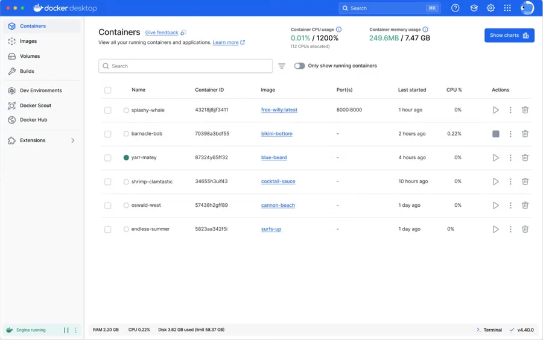
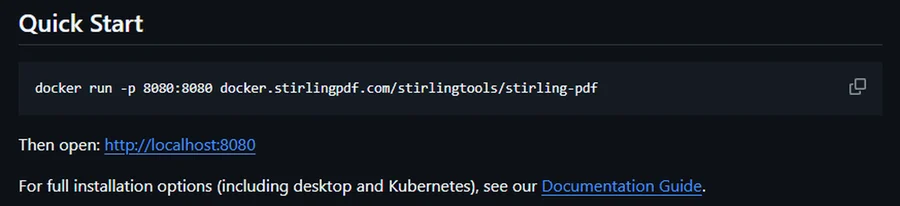
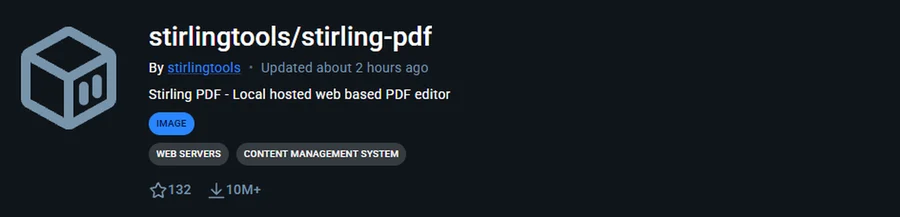

Docker range une appli dans un conteneur avec tout ce qu'il lui faut : une commande pour l'installer, rien ne touche au reste de ton PC, et ça tourne pareil partout. Explication simple, captures à l'appui.
DockerGratuit en perso3 captures annotées
1
C'est quoi ?
Docker est un logiciel qui fait tourner des applis dans des conteneurs. Comme un conteneur de bateau : dedans, l'appli et tout ce qu'il lui faut (bibliothèques, réglages, versions exactes). Le conteneur est fermé : il ne touche pas au reste de ton PC, et il tourne pareil partout : sur ton PC, sur un NAS ou sur un serveur.
L'image : le modèle
Une image est le modèle figé d'une appli, prêt à l'emploi. On la télécharge une fois, le plus souvent depuis Docker Hub, la grande bibliothèque d'images.
Téléchargée une fois
Le conteneur : l'appli qui tourne
Un conteneur est une copie de l'image en train de tourner. Avec une même image, tu peux lancer autant de conteneurs que tu veux, côte à côte, sans conflit.
Isolé
La commande : docker run
Sur la page d'un projet, la ligne docker run… télécharge l'image et lance le conteneur. Beaucoup de projets fournissent aussi un fichier docker-compose.yml pour tout lancer d'un coup.
Une seule ligne
Docker Desktop : l'appli à installer
Sur Windows et Mac, on installe Docker Desktop : il fait tourner Docker et montre tes conteneurs dans une fenêtre (lancer, arrêter, supprimer). Sur un NAS Synology, c'est Container Manager.
Gratuit en perso
Ce qu'il faut savoir (lu pour toi dans la doc)
€Gratuit… sous conditions. Docker Desktop est gratuit pour un usage perso, l'enseignement, l'open source non commercial et les entreprises de moins de 250 salariés et moins de 10 millions de dollars de chiffre d'affaires. Au-delà, ou pour une administration, il faut un abonnement payant (Pro, Team ou Business).
↔Supprimer sans laisser de trace. Supprimer un conteneur ne touche pas au reste de ton PC. Pense aussi à supprimer l'image (onglet Images) pour récupérer la place : certaines pèsent plus d'1 Go.
!Tes données, à mettre à l'abri. Ce qui est écrit dans un conteneur disparaît avec lui. Les projets sérieux indiquent un volume (un dossier de ton PC relié au conteneur) pour garder tes fichiers et réglages.
⚠N'installe que des images de confiance. Une image peut contenir n'importe quoi. Préfère les images officielles, celles des éditeurs vérifiés ou celles indiquées dans le dépôt GitHub du projet.
⌂Inventé par un Français.Solomon Hykes, ancien élève d'Epitech, a créé Docker au sein de sa start-up dotCloud et l'a dévoilé en public lors d'une intervention de 5 minutes à la PyCon 2013 (« The future of Linux Containers »). Les images de Docker Hub sont aujourd'hui téléchargées environ 20 milliards de fois par mois.
2
Où le trouver, pas à pas
Exemple réel avec Stirling-PDF, un projet présenté sur la chaîne : un éditeur de PDF qui tourne chez toi. Les pages sont en anglais : voici où regarder.
1
Installe Docker Desktop
docker.com › Download Docker Desktop
Télécharge Docker Desktop pour Windows, Mac ou Linux, installe-le et lance-le. L'onglet Containers liste tes conteneurs ; en bas à gauche, Engine running indique que Docker tourne.

Docker Desktop, onglet Containers (image officielle de docker.com, conteneurs d'exemple).
2
Copie la commande du projet
Page GitHub du projet › README › Quick Start
Dans le README, la section Quick Start donne la ligne à copier : docker run -p 8080:8080 …/stirling-pdf. Colle-la dans un terminal (PowerShell sous Windows) et valide.

README de Stirling-PDF sur GitHub, section Quick Start (24/11/2026).
3
Docker télécharge l'image
Docker Hub › stirlingtools/stirling-pdf
Docker récupère l'image (le modèle), ici depuis Docker Hub, puis lance le conteneur. La première fois, ça prend un peu de temps ; ensuite, c'est immédiat.

L'image Stirling-PDF sur Docker Hub : plus de 10 millions de téléchargements (24/11/2026).
4
Ouvre l'appli, puis supprime-la si besoin
Navigateur › localhost:8080
Ouvre http://localhost:8080 dans ton navigateur : l'appli est là. Plus besoin ? Dans Docker Desktop, arrête le conteneur puis clique sur la corbeille, et supprime l'image dans l'onglet Images.
3
5 usages concrets
01
Installer un projet GitHub
Jellyfin, Immich, Stirling-PDF, Home Assistant… La plupart des projets auto-hébergés donnent une commande Docker toute prête.
README→docker run→Appli prête
02
Tester sans risque
Tu essaies une appli dans un conteneur ; elle ne te plaît pas, tu la supprimes : ton PC reste propre.
EssayerSupprimer
03
Un serveur maison sur ton NAS
Sur un NAS (Synology, QNAP…) ou un mini-PC, des dizaines d'applis tournent côte à côte, chacune dans son conteneur.
NAS→10 conteneurs→Zéro conflit
04
Même chose partout
Le conteneur qui marche sur ton PC marche pareil sur un serveur : fini le « chez moi, ça marche ».
PCServeurCloud
05
Garder plusieurs versions
Deux versions d'une même appli ou d'une base de données peuvent tourner en même temps, chacune dans son conteneur.
Version 1Version 2
4
Et ailleurs ?
Docker Desktop n'est pas le seul moyen de faire tourner des conteneurs (vérifié le 24/11/2026).
Docker Desktop
Docker + fenêtre de gestionGratuit en perso et petites entreprises
OuiWindows, macOS, Linux
Bon pour : débuter : c'est l'outil que citent la plupart des tutoriels.
Podman Desktop
Conteneurs compatibles DockerGratuit, open source (Apache 2.0)
OuiWindows, macOS, Linux
Bon pour : une alternative 100 % gratuite, poussée par Red Hat, y compris en entreprise.
Container Manager (Synology)
Docker intégré au NASGratuit sur les NAS compatibles
OuiNAS Synology (DSM)
Bon pour : faire tourner tes applis 24 h/24 sur ton NAS.
Docker Engine
Docker sans interfaceGratuit, open source
OuiLinux (serveur, Raspberry Pi)
Bon pour : les serveurs et les Raspberry Pi, en ligne de commande.
Notre verdict
POUR DÉBUTERDocker Desktop sur ton PC et la commande du README d'un projet : 5 minutes.
POUR DURERun NAS ou un mini-PC allumé en permanence, avec Container Manager ou Docker Engine.
Rejoins les Repo-Potes
Chaque vidéo RepoPop Décode t'explique une fonction de ton IA en moins d'une minute, avec son kit comme celui-ci.